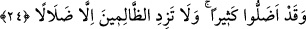

kuvvetli bir tenzih gücüdür. Çünkü eski âlimler Cenâb-ı Hakk’ı tenzih edip her şeyden
uzak gördüler ve bunu bütün halka emrettiler. Bâzılarının ta’tîl; yâni Cenâb-ı Hakk’ın
hiçbir şey yapmadığı düşüncesine kapıldığını gören bir kısım âlimler insanlar için
putlar yaptılar. İpek elbiseler, süs ve mücevherlerle o putları süslediler, sonra o putlara
secde ederek ve başka yollarla tâzimde bulundular. Böylece insanların akıllarından
çıkıp giden Hakk’ı hatırlamalarını hedeflemişlerdi. Ancak o âlimler bilmiyorlardı ki
Allah’ı hatırlatmak için bir ibâdet ortaya koymak ancak Allah Teâlâ’nın izniyle câiz
olabilirdi.”
Süheylî der ki: Bu eski isimlerin Araplara hintliler kanalıyla mı yoksa şeytan
vâsıtasıyla mı geçtiğini bilmiyorum. Rivâyet edildiğine göre Hintliler Nûh (a.s.)’dan
sonra putlara tapmaya başladılar. Şeytana gelince Nûh (a.s.)’dan sonra ilk câhiliyye
döneminde insanlara puta tapmayı onlar mı ilham ettiler bilmiyorum.
Tekmile’de denir ki: Takî b. Mahled rivâyet ediyor: Yukarda âyette sayılan isimler
Âdem (a.s.)’ın kendi zürriyetinden gelen oğullarıydı. Yeğus, onların içinde en büyüğü
idi. Bu isimler Süryânice isimlerdir. Sonra bu isimler Hint halkına ulaştı, onlar da yedi
yıldız biçiminde olduğunu iddiâ ettikleri putlarına bu isimleri verdiler. Cinler onlarla
bu putların içeresine girip konuşuyorlardı. Böylece Hintliler kendileriyle konuşan bu
putlara bağlandılar. Sonra bu putları Arapların arasına Mudar oğlu İlyas oğlu Kam’a
oğlu Amr b. Luhay yaydı. İşte Arap topraklarına bu âdet Amr sâyesinde gelmiştir.
Bâzılarının ifâdesine göre Ved erkek; Suva kadın; Yeğus aslan; Yeuk at, Nesr de kartal
sûretinde idi. Kartala nesr denmesi, avının etini parçalaması ve koparmasından
dolayıdır. Çünkü Arapçada “nesr” kökü, eti koparmak, parçalamak demektir.
Tevilatü’n-necmiyye bu âyet-i kerîmeyi şöyle tefsir eder: Bunlar da büyük hileler,
desiseler kurdular ve sakın ilâhlarınızı bırakmayın dediler. Bu ilâhlar kadın biçiminde
tasarlanmış veddü’n-nefs (nefis veddi), erkek biçiminde şekillenmiş süvâu’l-hevâ,
aslan şekline bürünmüş yeğusu’ttabia, at şeklinde biçimlenmiş yeuku’ş-şehve (şehvet
yeuk’u), kartal biçiminde şekillenmiş nesrü’ş-şerah (aç gözlülük nesr’i) ismindeki
ilâhlardır.
Kâşânî’nin anlayışına göre ise “sakın ilâhlarınızı bırakmayın” demek, hevâ ve
hevesinizle kendinizi kaptırdığınız mâbudlarınızı bırakmayınız. Şehvetlerinizle
kendisine ibâdet ettiğiniz ve çok sevdiğiniz beden Vedd’ini, nefis Süvâ’ını, ehl ü ıyâl
Yeğûs’unu, mal Yeûk’unu ve hırs Nesr’ini sakın bırakmayın!
24. (Böylece) onlar gerçekten birçoklarını saptırdılar. (Rabbim!) Sen de bu
zâlimlerin ancak şaşkınlıklarını arttır!
“Onlar” yâni o liderler, Müslümanların hâricindeki birçok insanı saptırdılar. Veya